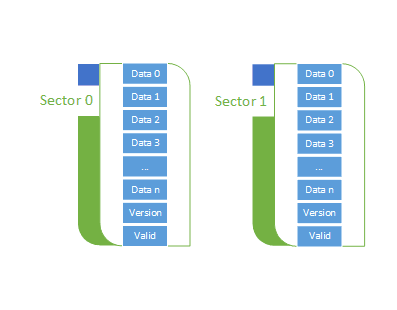

嵌入式实战场景题(全是干货)
以下试题均采集真实场景题目：
1. 我们通常所说的波特率9600bps，这个bps的意思是？
简答
- 波特率（baud rate）是衡量数据传输速率的单位，通常以每秒传输的比特数来表示。
- 在串行通信中，发送端和接收端必须保持相同的波特率设置，以确保正确传输数据。
- 如果发送端和接收端使用不同的波特率设置，那么数据传输会出现问题。
- 如果发送端使用9600 bps的波特率，而接收端使用不同的波特率，例如4800 bps，那么接收端可能无法正确解析发送端发送的数据。
- 这会导致数据传输错误、乱码和通信障碍。
2. SPI IIC UART那个属于异步通信 那个属于同步通信？
同步？异步？
最简单的分辨方式就是有无时钟线，(有时钟线就可以同步，没有就异步，很显然UART没有但是USART可以有时钟线.)
当然这是大多数情况下可以这么理解，特殊情况下没有时钟线也可以实现同步
- UART（异步）：UART使用起始位、数据位、校验位和停止位的组合来表示一个字符的传输。通信双方使用自己的时钟源，没有共享的时钟信号，因此是异步通信。
- SPI（同步）：SPI使用主从模式进行通信，主设备提供时钟信号来同步数据传输。通信双方在时钟的控制下进行数据的传输，因此是同步通信。
- IIC（同步）：IIC也称为I2C，使用主从模式进行通信，时钟线是由主设备提供的，从设备根据主设备的时钟信号进行数据传输，因此是同步通信。
3. 单片机ADC是什么？主要功能？
ADC（模数转换器）
- ADC（Analog-to-Digital Converter）即模数转换器，是一种将模拟信号转换为数字信号的电子元件。在单片机系统中，ADC主要用于将模拟信号转换为数字信号，以便单片机能够进行数字信号处理。
- 单片机ADC的主要功能是将外部模拟信号转换为数字信号，这种模拟信号可以来自各种传感器、电位器、电压等。
- 通过ADC转换后的数字信号可以直接读到单片机内部，进行数字信号处理。
- ADC的转换精度决定了单片机可以获取到的数字信号的准确程度，因此，ADC的精度对系统的性能有着关键作用。
引出问题：ADC和DAC有什么区别？
ADC的工作原理：
- ADC将模拟信号转换为数字信号。它的基本原理是将连续时间的模拟信号转换为离散时间的数字信号。
- 具体来说，ADC将模拟信号在时间上进行采样，然后通过量化操作将每个采样值转换为数字编码。这些数字编码可以用二进制代码表示。
- ADC在转换过程中需要通过采样频率和量化精度来决定转换质量，采样频率和量化精度越高，转换质量越好，但同时也会增加转换的成本和复杂度。
DAC的工作原理：
- DAC将数字信号转换为模拟信号。它的基本原理是将数字信号通过数字编码转换为模拟信号。
- 具体来说，DAC将数字信号的二进制代码解码，并根据解码结果输出对应的模拟信号。
- DAC的输出模拟信号可以是连续的，也可以是分段的。
- DAC的输出质量取决于DAC的分辨率和更新速率，分辨率越高，更新速率越快，输出质量越好。
4. 存储器类型 FLASH和RAM的区别
FLASH
- FLASH是一种非易失性存储器，即即使在断电情况下仍然可以保存其存储的数据。FLASH主要用于存储程序代码和常量数据，以及需要长期存储、或者经常更新的数据，例如配置信息。使用FLASH可以有效地减少系统启动时间和占用内存空间，同时也可以更好地保护程序数据的安全性。
- FLASH的缺点是存储速度相对较慢，写入时需要整个擦除块的数据先清除，再进行数据写入，一般擦除操作时间比写操作时间长，对于需要频繁改变的数据不太适用。
RAM
- RAM是一种易失性存储器，它可以快速读写数据，一般用于存储临时数据、变量、堆栈等运行时需要的数据。RAM有多种类型，包括静态RAM（SRAM）和动态RAM（DRAM）等。
- SRAM速度快、功耗低，但容量相对较小，容易受到电磁干扰；DRAM容量大，但需要刷新，读写速度较慢。RAM相比FLASH，读取速度更快，但在断电时会丢失数据，不适合存储长期数据。
- 总的来说，FLASH主要用于存储程序代码和常量数据，RAM主要用于存储临时数据和变量。选择存储器类型时要根据具体的应用需求来进行选择。
5. 一般情况下，单片机定时器的相关寄存器有哪些？
-
TCON寄存器（定时器控制寄存器）
TCON寄存器用于控制定时器运行、中断触发等相关操作。
-
TMOD寄存器（定时器/计数器模式控制寄存器）
TMOD寄存器用于设定定时器的工作模式，以确定定时器的计数方式和中断触发条件。
-
TH0、TL0、TH1、TL1寄存器（定时器计数初值与重载值寄存器）
这四个寄存器均为8位寄存器，用于保存定时器的计数初值和重载值。通常情况下，定时器正常计数时由THx和TLx两个寄存器共同组成一个16位定时器计数器，当计数器溢出后，自动将THx和TLx值重载。其中，TH0和TL0寄存器对应定时器0，TH1和TL1寄存器对应定时器1。
-
IE寄存器（中断使能寄存器）
IE寄存器用于开启或关闭各种中断。对于定时器中断，需要设置相应的中断标志位。
6. 嵌入式存储区域（ARM MDK 环境下内存分布情况）
-
CODE（或ROM）：
代码存储区域，通常指的是嵌入式系统中的只读存储器（ROM）或闪存（Flash）等。这是用于存储程序的指令代码的区域。
-
RO（Read-Only）：
只读存储区域，用于存储只读的常量数据，如字符串、常量数组等。这些数据可以被读取，但不能被修改。
-
RW（Read-Write）：
读写存储区域，用于存储可读写的数据，如全局变量、静态变量、堆内存等。这些数据可以被读取和写入，其值在程序执行期间可以被修改。
-
ZI（Zero Initialization）：
未初始化数据区域，用于存储未经初始化的全局变量或静态变量。这些变量在编译时分配内存区域，但不被初始化为特定的初值，默认值可能是0或空值。
例：
unsigned char a;
unsigned char b[8] = {1, 2, 3, 4, 5, 6, 7, 8};
unsigned char c[16] = {0};
const unsigned char d[1] = {0xdd};
int main() {
unsigned char e = 0xee;
}
a是在ZI区，b是RW区，c是ZI区，d是RO区，e是栈对吗
在这段代码中，变量的内存分配如下:
unsigned char a; 是一个全局变量，它的存储类别是未初始化的数据段（BSS段）或者称为零初始化区（ZI区）。
unsigned char b[8] = {1, 2, 3, 4, 5, 6, 7, 8}; 是一个全局数组变量，它会被分配到可读写数据段（RW段）。
unsigned char c[16] = {0}; 是一个全局数组变量，它同样会被分配到零初始化区（ZI区）。
const unsigned char d[1] = {0xdd}; 是一个全局常量数组变量，它会被分配到只读数据段（RO段）。
unsigned char e = 0xee; 是在 main() 函数中声明的局部变量，它会被分配到栈区。
7. C 程序 地址相关试题
数组 int a[5]= 12345 如果a的地址为0x2000106c 如果 int *p = &(a[1]); p++ ; int m = *p++; 此时m是多少 p是多少？
根据给出的代码和信息：
- 定义数组： int a[5] = {1, 2, 3, 4, 5};
这里定义了一个包含5个元素的整型数组a，并初始化为{1, 2, 3, 4, 5}。
- 定义指针： int *p = &(a[1]);
这里定义了一个整型指针p，并将其指向数组a的第二个元素a[1]，即2的地址。
- 指针递增： p++;
指针p的值增加1，所以它现在指向数组a的第三个元素a[2]，即3的地址。
- 解引用并递增： int m = *p++;
这里有两个操作符，先是解引用操作符*，然后是后递增操作符++。首先，对指针p进行解引用操作，得到其指向的值，即a[2]，即3。然后，指针p递增1，移动到下一个元素a[3]的地址。
-
结果：
- m 的值为3，因为它存储了指针p解引用时的值。
- p 的值指向数组a的第四个元素a[3]的地址，即此时指针p为0x20001078。
8.内存对齐
- 起始地址应满足： 起始地址 % 对齐值 = 0
- 总字节数应满足： 总字节数 % 最大对齐值 =0
在32位下得单片机中以下的结构体求sizeof会是多少？
typedef struct _TEST{
unsigned long a;
unsigned char b;
ussigned long c ;
unsigned short d;
}TEST
不同系统对齐规则也不同比如在windows下首先是64位：
那么上述的结构体在(windows|64)下sizeof = 8+（1+7）+8+4+4 = 32;实际上也是最大字节的倍数；
单片机|32：
那么其实也差不多 也就是 4+1+3+4+2=14 以最大字节数是4 必须是他的倍数 也就是 14+2 =16；
9.C代码排查
#include
#include
char *myString()
{
char buffer[6] = {0};
char *s = "hello world";
for(int i = 0; i< sizeof(buffer)- 1; i++)
{
buffer[i] = *(s+i);
}
return &buffer;
}
int main(int argc, char**argv)
{printf("%s\n", myString();
return 0;} 有什么错误，改正后输出结果是什么？
这里考察的实际上就是 char *返回的是局部变量，你在main函数中调用时这里的局部变量已经释放了。
也就是返回的buffer是悬挂指针。
改正后输出的也就是hello。
10.FLASH 安全擦写：
单片机一般都是片上 FLASH，片上 FLASH 可以反复擦写操作，利用这点可以保存一些产品相关的配置信息和数据，这些数据可能会经常修改，由于 FLASH 是按页擦除，且流程分为读改写擦四个步骤，为了避免此操作意外中断（比如断电）导致 FLASH 内数据不对，请您设计一个方案，避免此问题发生:
首先断电可以分为以下四个情况：
- 读操作中断：当正在读取 FLASH 中的数据时发生中断或断电。这种情况下可能导致读取的数据不完整或者出现错误。为了避免这种情况，可以在读取数据之前进行校验和验证，以确保数据的完整性。
- 改操作中断：当正在修改（写入）FLASH 中的数据时发生中断或断电。这种情况下可能导致修改的数据只部分成功写入，或者根本没有写入。为了避免这种情况，可以利用事务操作确保修改操作的原子性，即要么全部成功，要么全部失败。
- 写操作中断：当正在写入 FLASH 中的数据时发生中断或断电。这种情况下可能导致写入的数据只部分成功，或者根本没有写入。为了避免这种情况，可以使用备份区域和数据镜像技术，在写入数据之前先备份数据，并在写入完成后进行校验和验证。
- 擦除操作中断：当正在擦除（清除）FLASH 中的数据时发生中断或断电。这种情况下可能导致擦除操作只部分完成，或者根本没有完成。为了避免这种情况，可以使用备份区域和数据镜像技术，在擦除之前先备份数据，并在擦除完成后进行校验和验证。
解决方法：
- 使用电池备份：将系统与一个或多个电池连接，以提供断电时的备用电源。当主电源中断时，电池能够持续为系统供电，以保证系统的正常运行。这种方式适用于短暂的断电情况。
- 使用不间断电源（UPS）：UPS 是一种能够在主电源中断时维持供电的设备，通常由电池提供备用电源。当主电源中断时，UPS 可以自动切换到备用电源模式，确保系统继续供电，从而避免断电造成的数据丢失或系统崩溃。UPS 适用于短时间的断电情况。
- 数据备份和恢复：定期进行数据备份，并将备份数据保存在可靠的存储介质上，如硬盘或云存储。即使发生断电，并造成数据丢失，可以通过恢复备份数据来恢复系统。
- 使用非易失性存储器（Non-Volatile Memory，NVM）：相比于传统的易失性存储器（如 DRAM），NVM 可以在断电时保存数据。例如，闪存和 EEPROM 是常见的 NVM 类型。通过使用 NVM，系统可以在断电后保持数据的完整性。
- 整体系统设计：在设计系统时，可以采用事务处理和写入保护机制，确保在断电时已经写入的数据不会损坏。事务处理可以确保多个操作要么全部成功，要么全部失败，防止数据不一致。写入保护机制可以在断电时保持待写入数据的可靠性，如使用校验和和备份数据。
例详解：备份到非可易失内存上：
如下图所示，使用两个 sector 互为备份，首先判断 valid，如果数据都有效，比较 version 看谁的数据比较新，使用最新的数据。

正常的情况下：
- 初始化，sector 0 和 sector 1 的 valid 值都为 0xff，使用 sector 0 擦写，version 为 0，valid 为 0x5a。
- 第二次擦写，sector 0 的 valid 为 0x5a，sector 1 的 valid 为 0xff，表明 sector 1 为无效数据，使用 sector 1 擦写，vesion 在上次的基础上加 1，valid 为 0x5a。
- 第三次擦写，sector 0 和 sector 1 的 valid 值都为 0x5a，比较 version，sector 1 的 version 比 sector 0 大，所以使用 sector 0 擦写，sector 1 为备份数据，version 加 1，valid 为 0x5a。
- 依此类推，擦写数据的过程中，version 高的为最新数据，version 低的为备份数据。
掉电的情况下：
- 如果在擦除 sector 0 的时刻掉电，前半部分数据为 0xff，后半部分数据是旧数据；重启后比较 valid 都为 0x5a，进而比较 version，因为最新数据的 version 没有写进去，所以 sector 1 的 versoion 较高，使用 sector 1 的旧数据。
- 如果在擦完 sector 0 的时刻掉电，所有数据都为 0xff；重启后 sector 1 的 valid 为 0x5a，使用 sector 1 的旧数据。
- 如果在写 sector 0 的时刻掉电，前半部分数据为新数据，后半部分数据为 0xff；重启后 sector 1 的 valid 为 0x5a，使用 sector 1 的旧数据。
总结：就是以其中一个作为最新数据，另一个作为备份数据，当断电的时候万一你最新的数据没有了，根据版本号来确定还可以用备份数据进行 FLASH 数据恢复，所以这里两个 sector 的作用就是让你把数据备份好。
11.SPI 通讯问题排查：
在 SPI 单片机项目中，从机通讯失败可能涉及多个方面的问题。以下是一些可能出现问题的地方以及问题的排查流程：
1.硬件连接问题：
- 确保从机芯片的电源和地线连接正确。
- 检查 SPI 通讯线是否连接正确，包括时钟线、数据输入线和数据输出线。
- 确保从机的片选引脚（SS）连接正确，并且在通讯时片选信号被正确地拉低。
2.时钟设置问题：
- 检查主机与从机之间的时钟频率设置，确认它们之间的通讯频率是匹配的。
- 确保时钟极性（CPOL）和相位（CPHA）设置与从机要求的设置一致。
3.软件配置问题：
- 检查从机的 SPI 控制寄存器设置是否正确，包括使能 SPI 模块、设置工作模式、设置数据传输格式等。
- 确保主机发送的命令和数据符合从机的通讯协议要求。
4.信号干扰问题：
- 检查通讯线路附近是否有可能引起干扰的元件或信号，如电机、继电器等，确保通讯线路受到良好的屏蔽和隔离。
- 考虑使用滤波器或电磁屏蔽措施消除干扰。
排查流程可以按照以下步骤进行：
- 首先，确认硬件连接是否正确，包括电源、信号线和片选引脚连接。
- 检查时钟设置和通讯协议是否匹配，包括时钟频率、极性和相位设置。
- 对比从机的 SPI 寄存器设置和通讯协议要求，确保设置正确。
- 检查通讯线路附近的潜在干扰源，采取相应的屏蔽和干扰消除措施。
- 如果以上步骤都没有解决问题，可以考虑使用示波器观察通讯信号波形，从而进一步定位问题所在。
12.算法题：
完成以下题目：有两个大数 unsigned char M [128}和 unsigned char N [128] 所谓大数就是多个字节表示一个数，假设这里大数 M 和 N 长度都是 128 字节，大端格式存储。现在先将 M 乘 4、N 乘 2，求 M 和 N 运算后的和。
- 首先，将大数 M 和 N 按照大端格式解析为整数。假设 M 和 N 的每个字节都是无符号整数。
- 将整数 M 乘以 4，可以通过将 M 向左移 2 位来实现。这相当于每个字节都乘以 2 的平方。
- 将整数 N 乘以 2，可以通过将 N 向左移 1 位来实现。这相当于每个字节都乘以 2。
- 计算 M 和 N 之和，将对应的字节相加，并将结果存储在一个结果数组中。由于结果数组也需要是大数，因此它也需要按照大端格式存储。
以下是示例代码：
#include <stdio.h>
// 将大数解析为整数
unsigned int parseBigInt(unsigned char* bigInt)
{
unsigned int result = 0;
for (int i = 0; i < 128; i++)
{
result <<= 8;
result += bigInt[i];
}
return result;
}
// 将整数转换为大数的大端格式存储
void intToBigEnd(unsigned int num, unsigned char* bigInt)
{
for (int i = 127; i >= 0; i--)
{
bigInt[i] = num & 0xFF;
num >>= 8;
}
}
void multiplyBy4(unsigned char* bigInt)
{
unsigned int num = parseBigInt(bigInt);
num *= 4;
intToBigEnd(num, bigInt);
}
void multiplyBy2(unsigned char* bigInt)
{
unsigned int num = parseBigInt(bigInt);
num *= 2;
intToBigEnd(num, bigInt);
}
void addBigInts(unsigned char* result, unsigned char* bigInt1, unsigned char* bigInt2)
{
unsigned int num1 = parseBigInt(bigInt1);
unsigned int num2 = parseBigInt(bigInt2);
unsigned int sum = num1 + num2;
intToBigEnd(sum, result);
}
int main()
{
unsigned char M[128] = { /* 大数 M 的字节表示 */ };
unsigned char N[128] = { /* 大数 N 的字节表示 */ };
multiplyBy4(M);
multiplyBy2(N);
unsigned char result[128];
addBigInts(result, M, N);
// 输出结果
for (int i = 0; i < 128; i++)
{
printf("%02X ", result[i]);
}
printf("\n");
return 0;
}